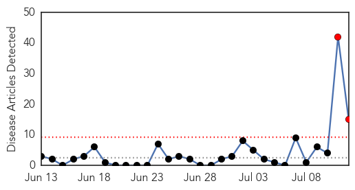
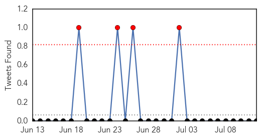
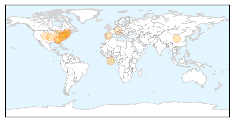
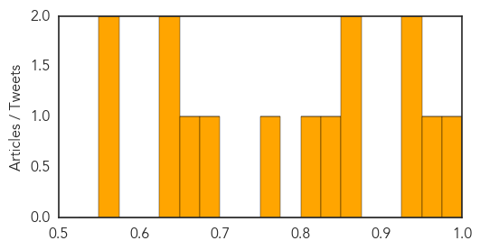
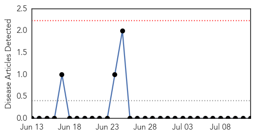

Influenza
30-Day Web Trend
2 alerts, 0 warnings

30-Day Twitter Trend
0 alerts, 0 warnings

Article Locations
Article Confidences
Top Articles:
- 0.985
- Why Pox Viruses Are So Dangerous
- 0.969
- US Government Infectious Disease Labs Mishandled Dangerous Pathogens
- 0.933
- CDC closes anthrax and flu labs after accidents
- 0.927
- US labs closed after safety breaches
- 0.858
- CDC says it improperly sent dangerous pathogens in 5 incidents in past decade
- 0.854
- US lab mistakenly mixes a common flu strain with a deadly bird flu
- 0.838
- CDC says it improperly sent dangerous pathogens in 5 incidents in past decade
- 0.801
- US government laboratory reveals series of dangerous mix-ups
- 0.775
- Feds Tighten Lab Security After Anthrax, Bird Flu Blunders
- 0.683
- Anthrax scare reveals more CDC safety problems; 2 labs are shut
- 0.652
- Anthrax Scare Exposes Other Mistakes, Closes 2 Labs
- 0.649
- U.S. anthrax probe reveals new bird flu mishap, widespread safety lapses
- 0.649
- U.S. anthrax probe reveals new bird flu mishap, widespread safety lapses
- 0.556
- Microbix Biosystems sues Novartis for Virusmax patent infringement in Europe
- 0.556
- More problems shutter CDC labs, prompt review
Top Tweets:
-
No tweets found for Jul 12, 2014
Mumps
30-Day Web Trend
0 alerts, 0 warnings

30-Day Twitter Trend
0 alerts, 0 warnings

Article Locations

Article Confidences

Top Articles:
-
No articles found for Jul 12, 2014
Top Tweets:
-
No tweets found for Jul 12, 2014